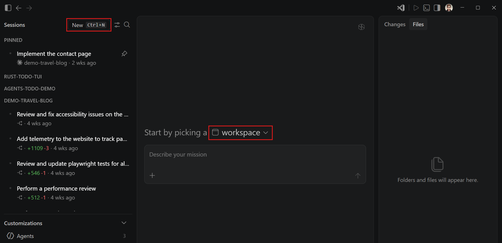
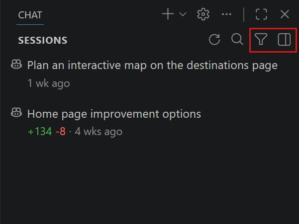
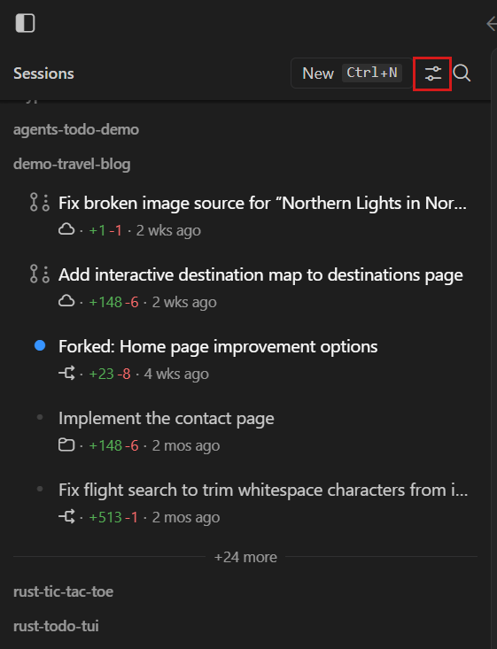
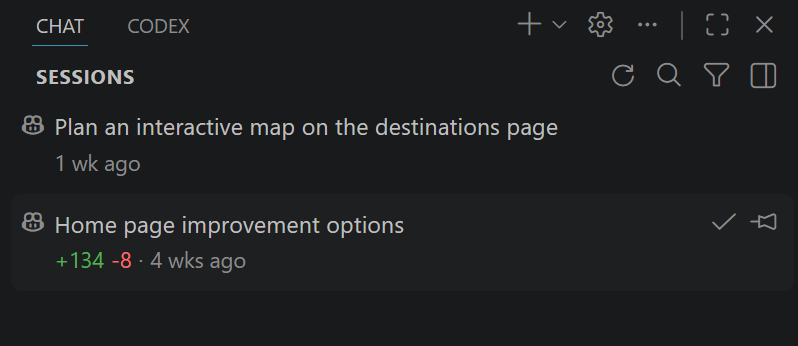
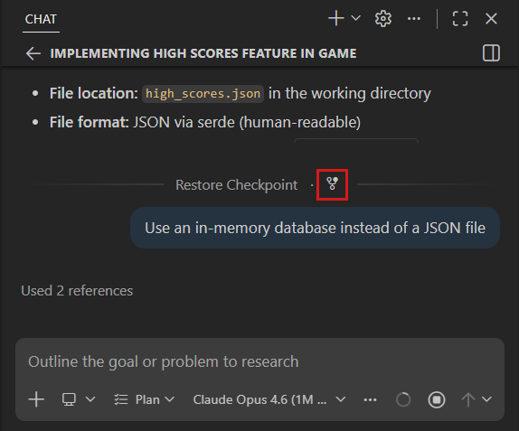
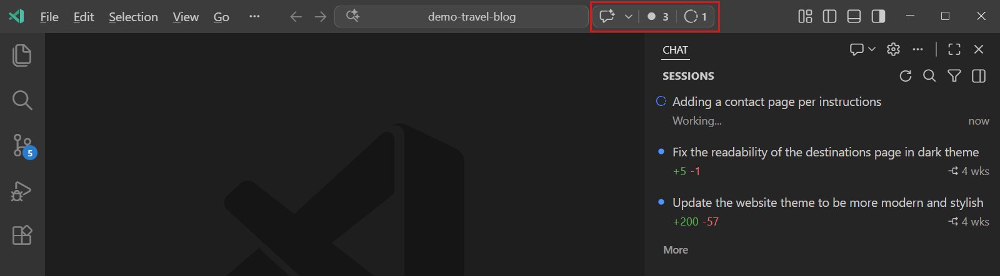

在 VS Code 中使用聊天会话
在 Visual Studio Code 中使用聊天功能进行基于对话的 AI 交互。聊天会话由您与 AI 之间的提示和响应序列组成，以及来自您的代码或文件的任何相关上下文。本文介绍如何创建和管理聊天会话、使用会话列表以及组织您的会话。这些功能在聊天视图和 Agents 窗口中均可使用。
通过动手教程体验 VS Code 中的本地、后台和云端代理。
开始新的聊天会话
当您开始一个新的聊天会话时，您就开启了一段与 AI 的新对话。每个会话都有其自己的上下文窗口，并且可以使用不同的代理类型运行。您可以并行运行多个会话，每个会话专注于不同的任务或主题。使用会话列表来监控和切换不同的会话。
[!TIP]
当您想切换话题时，开始一个新的聊天会话，以帮助 AI 提供更相关的响应。
根据您偏好的工作方式或想要完成的任务，您可以在 VS Code 中选择不同的聊天体验。每种体验都针对不同的工作流进行了优化，但它们共享相同的基础会话，使您能够随时在它们之间切换。
{% tabs id="chat-surface" %}
{% tab label="Agents 窗口" %}
Agents 窗口是一个专用窗口，用于从单一位置跨多个项目编排代理。聊天是您的主要界面，用于向代理分配高级任务。Agents 窗口针对代理优先工作流进行了优化。

在 Agents 窗口中开始新的聊天会话：
- 通过选择 VS Code 标题栏中的在 Agents 中打开按钮来打开 Agents 窗口。
- 在侧边栏中选择新建以创建新会话。
- 为会话选择工作区或仓库，因为 Agents 窗口可以针对您的任何项目。
- 从下拉列表中选择代理类型，以指定代理会话的运行位置及其操作方式。
您可以选择本地、Copilot CLI、云端或第三方。了解有关代理类型的更多信息。
- 可选地，为会话选择额外的配置选项：
- 代理：确定 AI 的角色或人格，例如 Agent、Plan 或 Ask。了解有关选择代理的更多信息。
- 权限级别：控制代理在工具审批方面的自主程度。了解有关权限级别的更多信息。
- 语言模型：确定哪个 AI 模型为对话提供支持。了解有关 VS Code 中的语言模型的更多信息。
- 代理：确定 AI 的角色或人格，例如 Agent、Plan 或 Ask。了解有关选择代理的更多信息。
kb(workbench.action.chat.submit) 提交。代理的响应将显示在聊天区域中，代理可能会执行诸如编辑文件、运行命令或提出后续问题等操作。
{% /tab %}
{% tab label="聊天视图" %}
聊天视图是一个聊天面板，位于侧边栏中，与您的工作区编辑器标签页并列。代理协助您完成编码任务，同时您可以完全访问 VS Code 丰富的编码体验。聊天视图针对代码优先工作流进行了优化。

在聊天视图中开始新的聊天会话：
- 通过选择 VS Code 标题栏中的聊天图标来打开聊天视图。
- 通过选择新建聊天（
+）按钮创建空会话。
该会话的作用域限定为当前工作区，因此如果您打开了工作区，会话会自动链接到该工作区。
- 选择代理类型以确定代理会话的运行位置及其可访问的功能。
您可以选择本地、Copilot CLI、云端或第三方。了解有关代理类型的更多信息。
- 可选地，为会话选择额外的配置选项：
- 代理：确定 AI 的角色或人格，例如 Agent、Plan 或 Ask。了解有关选择代理的更多信息。
- 权限级别：控制代理在工具审批方面的自主程度。了解有关权限级别的更多信息。
- 语言模型：确定哪个 AI 模型为对话提供支持。了解有关 VS Code 中的语言模型的更多信息。
- 代理：确定 AI 的角色或人格，例如 Agent、Plan 或 Ask。了解有关选择代理的更多信息。
kb(workbench.action.chat.submit) 提交。代理的响应将显示在聊天区域中，代理可能会执行诸如编辑文件、运行命令或提出后续问题等操作。
{% /tab %}
{% /tabs %}
会话列表
会话列表是您管理所有聊天会话的中心枢纽，无论您在哪里开始会话或会话在哪里运行。会话列表显示您的会话信息，包括其状态、类型和文件更改。

将鼠标悬停在会话上可看到固定或归档操作。右键单击列表中的会话可看到其他操作，如删除或更改会话状态。某些操作特定于会话的代理类型和状态。例如，为云端代理会话检出拉取请求。
使用固定操作可将重要会话保持在列表顶部以便轻松访问。固定的会话无论其活动或状态如何，都会保持在列表顶部，以便您可以快速找到并返回它们。
{% tabs id="chat-surface" %}
{% tab label="Agents 窗口" %}
在 Agents 窗口中，会话列表位于左侧边栏中。它显示来自所有工作区的会话，因此您可以从单一位置监控跨项目的工作。每个会话项都会显示关键信息，如会话名称、工作区、代理类型和文件更改统计。

默认情况下，列表经过筛选仅显示活动会话。您可以更改筛选器以显示不同状态的会话，例如已完成或已归档。
会话默认按工作区分组，您可以切换分组方式改为按时间范围组织。
您可以通过选择 Agents 窗口左上角的切换侧边栏按钮或使用 kb(workbench.action.toggleSidebarVisibility) 键盘快捷键来隐藏左侧边栏。
{% /tab %}
{% tab label="聊天视图" %}
在聊天视图中，会话列表的作用域限定为当前工作区，并按时段（如今天或上周）对会话进行分组。如果您没有打开工作区，列表会显示跨所有工作区的所有会话。
默认情况下，列表经过筛选仅显示活动会话。您可以更改筛选器以显示不同状态的会话，例如已完成或已归档。
要从聊天视图中隐藏会话列表，请在空聊天区域右键单击并取消选择显示会话，或使用 setting(chat.viewSessions.enabled) 设置。
聊天视图有两种模式：紧凑模式和并排模式。您可以通过使用聊天视图右上角的切换控件手动在紧凑模式和并排模式之间切换。
- 紧凑模式：会话列表嵌入在聊天视图中。当您从列表中选择一个会话时，聊天视图会切换到该会话。使用返回按钮返回会话列表。
- 并排模式：会话列表与聊天视图并排显示。从列表中选择一个会话可在聊天视图中查看其详细信息。您可以使用
setting(chat.viewSessions.orientation)设置进一步配置方向。[!NOTE]
扩展开发者可以通过使用提议的 API
chatSessionsProvider了解如何与会话视图集成。该 API 目前处于提议状态，可能会发生变化。
{% /tab %}
{% /tabs %}
归档会话
为了保持会话列表整洁，当会话完成或您不再需要它们时，可以归档或将会话标记为完成。归档会话不会将其删除。您可以随时取消归档会话，将其恢复到活动会话列表中。
当您归档（或标记为完成）一个会话时，其状态会发生变化，使其从活动会话列表中移出。如果会话使用了工作树（如 Copilot CLI 会话），只要其工作树是干净的，该工作树就会从文件系统中移除。分支和所有提交都会被保留，因此恢复会话时会从该分支重新创建工作树，不会有任何工作丢失。
要归档会话，请在会话列表中将鼠标悬停在该会话上，然后选择归档（聊天视图）或标记为完成（Agents 窗口）选项。

要查看已归档的会话，请使用会话列表中的筛选选项，然后选择已归档（聊天视图）或已完成（Agents 窗口）筛选器。
删除会话
要永久删除会话，请右键单击会话列表中的会话，然后选择删除。删除会话会永久移除它，且无法撤消。对于 Copilot CLI 会话，删除会话还会移除为该会话创建的所有关联工作树。
如果多个 Copilot CLI 会话共享同一个工作树（例如在您分叉会话后），当另一个会话仍在使用该工作树时，删除一个会话不会移除共享的工作树。只有在最后一个链接的会话被删除或归档后，工作树才会被移除。
[!CAUTION]
删除会话是不可逆的。如果您只想隐藏会话，请考虑改为归档它。
分叉聊天会话
分叉聊天会话会创建一个新的独立会话，该会话继承原始会话的对话历史记录。分叉后的会话与原始会话完全独立，因此一个会话中的更改不会影响另一个。新会话标题以"Forked: "为前缀，以帮助您识别它。
对于使用工作树隔离的 Copilot CLI 会话，分叉的会话将继续使用与原始会话相同的工作树。
当您想要探索替代方法、提出旁支问题或将长篇对话分支到不同方向而不丢失原始上下文时，分叉功能非常有用。
有两种分叉聊天会话的方式：
- 分叉整个会话：在聊天输入框中输入
/fork并按kbstyle(Enter)。将打开一个新会话，其中包含从当前会话复制的完整对话历史记录。 - 从检查点分叉：将鼠标悬停在对话中的聊天请求上，然后选择分叉对话按钮。将打开一个新会话，其中仅包含截至该检查点（含）的请求。

保存和导出聊天会话
您可以保存聊天会话以保留重要的对话，或在以后将其重用于类似的任务。
将聊天会话导出为 JSON 文件
您可以导出一个聊天会话，将其保存以供以后参考或与他人分享。导出聊天会话会创建一个包含会话中所有提示和响应的 JSON 文件。
导出聊天会话的步骤：
- 在聊天视图中打开您要导出的聊天会话。
- 从命令面板（
kb(workbench.action.showCommands)）运行聊天：导出聊天... 命令。 - 选择保存 JSON 文件的位置。
将聊天消息复制为 Markdown
聊天视图支持不同的选项，用于将聊天消息以 Markdown 格式复制到剪贴板，可通过右键单击消息或聊天背景时的上下文菜单使用。
- 复制：将单个提示或响应复制到剪贴板——Markdown 包含响应文本、思考步骤和工具调用。
- 全部复制：以 Markdown 格式复制整个聊天会话，包括所有提示、响应、思考步骤和工具调用。
- 复制最终响应：仅复制代理响应中最后一段 Markdown 内容，即最后一次工具调用之后的内容。这对于分享或重用最终输出而不包含中间步骤非常有用。
会话状态指示器（实验性）
会话状态指示器通过标题栏中的命令中心提供对会话的快速访问。该指示器显示未读消息和进行中会话的视觉徽章，使您无需切换视图即可随时了解 AI 活动。

该指示器显示：
- 未读会话徽章：显示有新消息的聊天会话数量。选择该徽章可筛选会话列表，仅显示未读会话。
- 进行中会话徽章：显示有代理正在运行的会话数量。选择该徽章可筛选会话列表，仅显示进行中的会话。
- 星图标：提供对聊天和会话管理选项的快速访问。
您可以使用 setting(chat.agentsControl.enabled) 设置来配置状态指示器的可见性。
在 VS Code 欢迎页面上查看会话
VS Code 欢迎页面可以作为您使用聊天会话的启动体验。它提供对最近聊天会话的快速访问、用于启动新任务的嵌入式聊天小部件以及常见任务的快速操作。
要将 VS Code 欢迎页面配置为您的启动体验，请将 setting(workbench.startupEditor) 设置为 agentSessionsWelcomePage。